Late Ancient Pottery
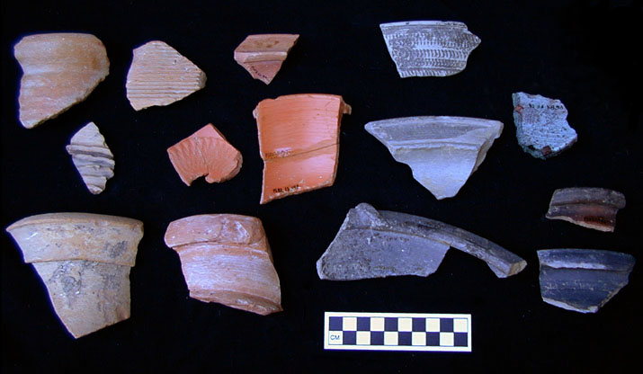
Pottery of the fifth and sixth centuries AD is particularly well represented at Psalmodi. The assemblage at Psalmodi has an unusually wide variety and high frequency of imported ceramics, resembling larger sites like St. Blaise and Marseille more than many other small sites of the same period in Mediterranean France.
The late ancient assemblage at Psalmodi begins probably in the first half of the fifth century, and ends in the late sixth or early seventh century. The fine tablewares present include dérivées-de-sigillée (D-S-P) produced within southern France, as well as imported African Red Slip ware (ARS) from Tunisia and Late Roman C ware (LRC) from western Turkey. Commonwares are dominated by the regional pisolithic and kaolinitic wares, but a few fragments of imported cooking wares have been found, from Liguria in Italy, Tunisia, the eastern Aegean, and Palestine, as well as lathe-turned stone pots from the Alps. Transport amphoras are dominated by North African cylindrical amphoras, as usual for this period in the western Mediterranean, but imports from the Eastern Mediterranean are also present, including the types called Late Roman Amphora 1, Late Roman Amphora 2, Late Roman Amphora 3, Late Roman Amphora 4, and an eastern Aegean amphora comparable to Saraçhane type 16.
An enigmatic find is a single North African vaulting tube. In its intended use, thousands would be required to form a single vaulted chamber; there is no indication of such numbers at Psalmodi. Other sites in southern France, such as Marseille, also have isolated vaulting tubes.
For an example of the quantification of one deposit of this period, see Pit 88.102.24/28.
The thumbnail illustrations on this page are linked to larger images that are at 1:1 scale when viewed on a monitor with 72 dpi resolution.
Finewares
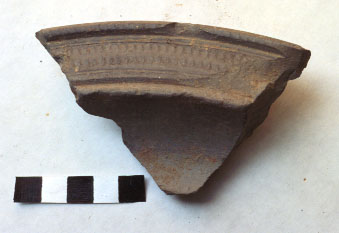
African Red Slip
| ARS Lamboglia 52b, 425-500 |
| ARS Hayes 94/98, 450-500 |
| ARS Hayes 94, 450-550 |
| 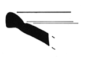 | ARS Hayes 87b, 475-550 |
| 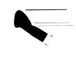 | ARS Hayes 87b, 475-550 |
| 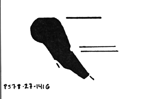 | ARS Hayes 87c, 525-575 |
| ARS Hayes 91c, 500-600 |
| 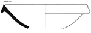 | ARS Hayes 91c, 500-600 |
| 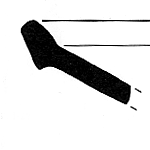 | ARS Hayes 104a, 525-600 |
 | ARS Hayes 99c, 550-620 |
 | ARS Hayes 105, 580-675 |
Late Roman C (Phocaean Red Slip)
| 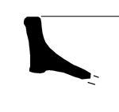 | LRC Hayes 3C, c. 460-500 |
Dérivées de Sigillée Paléochrétienne
| 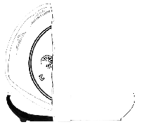 | D-S-P Rigoir 4 base with stamped decoration, 370-500 |
| 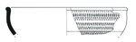 | D-S-P Rigoir 6, 370-500 |
| 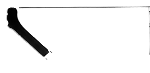 | D-S-P Rigoir 11/33, 370-500 |
| 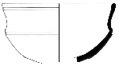 | D-S-P Rigoir 18b, 370-500 |
| 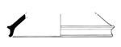 | D-S-P Rigoir 31, 400-450 |
Commonwares
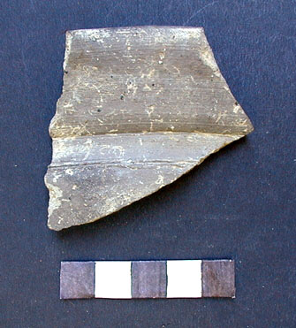
Regional commonwares (Pisolithic and Kaolinitic)
| 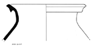 | Pisolithic form A7, 450-520 |
| Pisolithic form A7, 450-520 |
| 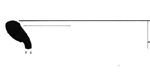 | Pisolithic form B5c, 430-480 |
| 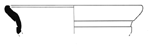 | Pisolithic form B5e, 470-550 |
| Pisolithic form B5e, 470-550 |
| 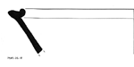 | Pisolithic form D2a mortarium, 450-550 |
| Kaolinitic form A29a, 500-650 |
| Kaolinitic form B28 with incised decoration, 450-550 |
Aegean cookware
| Com-Medit 05 Aegean cooking pot, 450-600 |
| 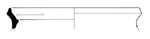 | Com-Medit 05 Aegean cooking pot, 450-600 |
Palestinian cookware
| 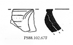 | Com-Medit 04 Palestinian casserole, 500-650 |
Ligurian cookware
| 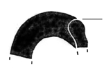 | Com-Medit 14(?) Ligurian cooking pot, 500-650 |
Amphoras
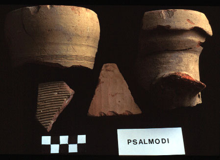
African amphoras
| 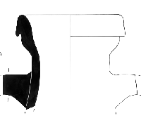 | African amphora Keay 62a, 450-600 |
| 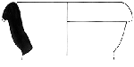 | African amphora Keay 62a, 450-600 |
| 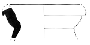 | African amphora Keay 62a, 450-600 |
| African amphora, Keay 62q, 450-600 |
| 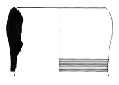 | African amphora Keay 55, 500-650 |
| 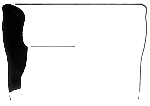 | African amphora Keay 55, 500-650 |
| 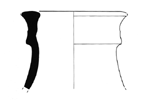 | African amphora Keay 8b, 500-650 |
| 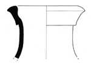 | African amphora Keay 8b, 500-650 |
| African amphora Keay 61d, 550-700 |
Eastern Mediterranean amphoras
| 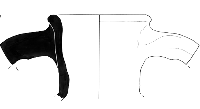 | Late Roman Amphora 1, 450-600 |
| 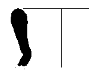 | Late Roman Amphora 2, 400-600 |
| Late Roman amphora 4 rim, 400-600 |
| 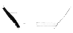 | Late Roman Amphora 4 near base, 400-600 |
| 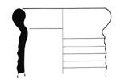 | Saraçhane 16 amphora, 450-550 |
Construction material
 | Vaulting tube, North African fabric |
{kind=link}
{kind=link}
{kind=link}
{kind=link}
{kind=link}
{kind=link}
{kind=link}
{kind=link}
{kind=link}


{kind=link}
{kind=link}
{kind=link}
{kind=link}
{kind=link}
{kind=link}
{kind=link}
{kind=link}
{kind=link}
{kind=link}
{kind=link}
{kind=link}
{kind=link}
{kind=link}
{kind=link}
{kind=link}
{kind=link}
{kind=link}
{kind=link}
{kind=link}
{kind=link}
{kind=link}
{kind=link}
{kind=link}
{kind=link}
{kind=link}
{kind=link}
{kind=link}
{kind=link}
{kind=link}
{kind=link}
{kind=link}